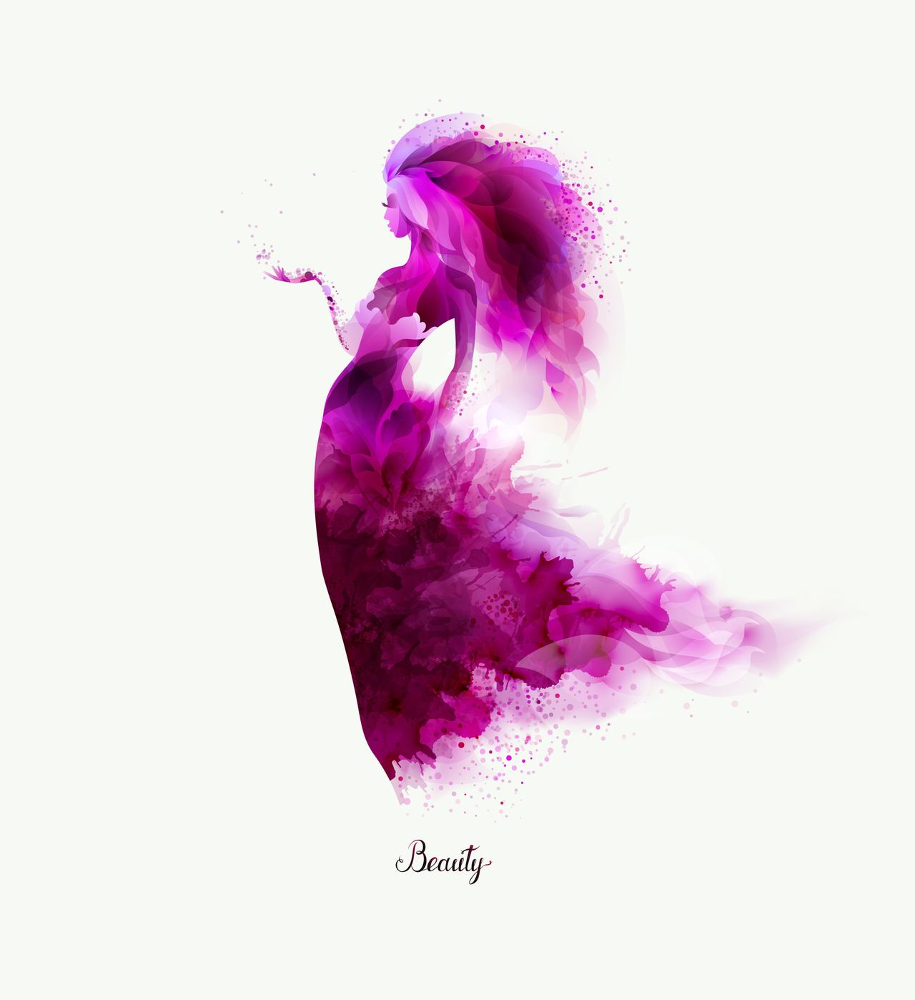
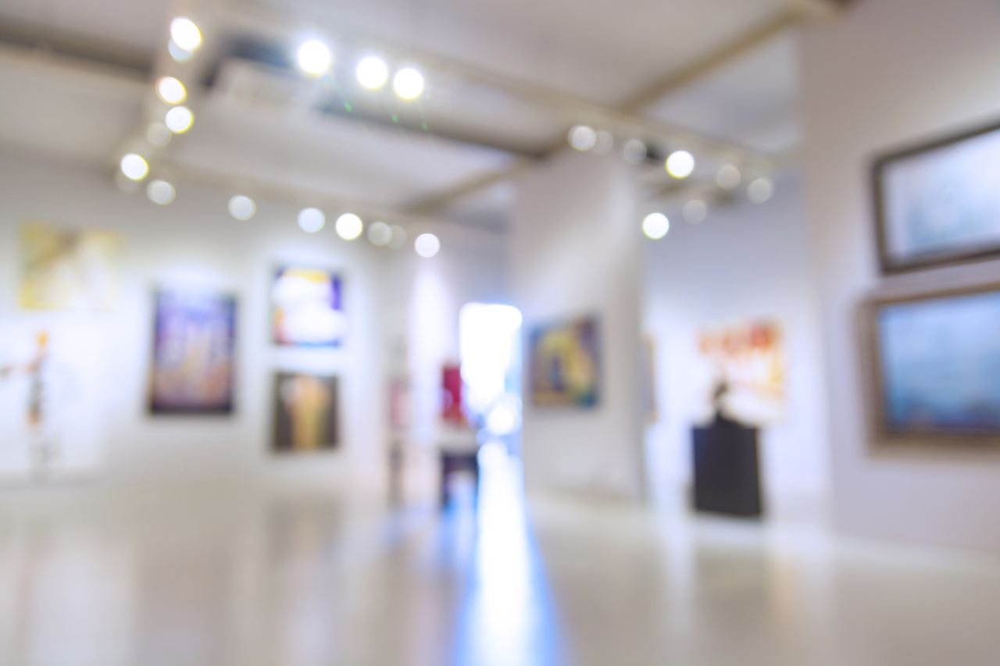

Künstlerinnen
Das Isabella-Edel-Museum vereint die Werke von insgesamt 42 Künstlerinnen. Darunter befinden sich bekannte Größen wie Käthe Kollwitz und Berthe Morisot. Andere Künstlerinnen wurden aber auch vollkommen übersehen, ihre Bilder sind nun zum ersten Mal öffentlich zugänglich, darunter Karima Arat und Hafsa Khumalo. Das Besondere: Im Isabella-Edel-Museum können sich Besucher/-innen umfangreich über die Künstlerinnen informieren. Dafür sorgen hochspannende Biografien, die durch verschiedene Medien präsentiert werden.
- 42Künstlerinnen
- 300Kunstwerke
- 4Räume


Im Isabella-Edel-Museum finden Sie die vier Ausstellungsräume
-

R1: Renaissance bis Rokoko
Wie Künstlerinnen die Antike wiederauferstehen lassen
- Artemisia Gentileschi
- Lavinia Fontana
- Magdalena Haussmann
- Rosaba Carriera
- Anastasia Unterberg
-

R2: Klassizismus bis Realismus
Weibliche Kraft und Vitalität
- Adélaide Labille-Guiard
-

R3: Das 20. Jahrhundert
Jede wirklich neue Idee ist eine Aggression
- Käthe Kollwitz
- Meret Oppenheim
-

R4: Künstlerinnen der Gegenwart
Neue Brücken schaffen
- Mahbuba Elham Maqsoodi
- Irina Ojovan
- Joëlle Dubois
- Milja Laurila

„Wann immer wir auf Beschriftungen in einem Museum „Werkstatt“ oder „unbekannter Künstler“ lesen, sollten wir in Betracht ziehen, dass dieses Bild möglicherweise von einer Frau stammt, deren Leistung nicht gewürdigt wurde.“